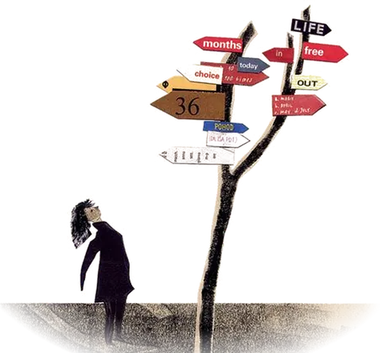

Конфиденциальность
Всё, что вы рассказываете, остаётся между нами. Исключения: угроза жизни и здоровью и случаи, предусмотренные законом.
Работаю в соответствии с этическим кодексом Московского гештальт института.
психолог, гештальт-подход
Психолог для взрослых и подростков
Я знаю, как непросто бывает решиться на встречу с психологом. Особенно когда и без того тяжело, сил немного, а впереди разговор с незнакомым человеком о том, что порой трудно объяснить даже самому себе.
Мне важно, чтобы рядом со мной вы могли постепенно почувствовать себя свободнее в разговоре о том, что вас беспокоит. Я буду внимательно слушать, стараться понять вас и вместе с вами разбираться в ваших переживаниях. Здесь не нужно заранее находить правильные слова, точно знать, чего вы хотите, или рассказывать больше, чем вы сейчас готовы.
Я постаралась собрать на этом сайте достаточно информации о себе, своём подходе и о том, как устроена наша работа. Вы можете спокойно познакомиться со мной, почитать статьи и материалы, прислушаться к своим ощущениям и решить, подходит ли вам то, что я предлагаю. А возможно, что-то полезное для себя вы найдёте уже здесь.
Онлайн и очно, м. Невский проспект
Первая встреча 1000 ₽ · 55 минут

о работе со мной в двух словах
Пара минут, чтобы услышать мой голос и увидеть, как я говорю о работе.
ваш запрос
Работаю со взрослыми и подростками от 15 лет.
своя фраза о том, что можно прийти без готовой цели, и о том, что цель работы – качество жизни, а не «избавиться любой ценой». После интервью (вопросы 5–6)
мои границы
Честно говорю об этом заранее, чтобы вы не тратили время и деньги:
образование
Факультет психологии СПбГУ
2026, красный диплом
Московский гештальт институт, базовый курс
1 ступень, в процессе
Основы психологической работы с детьми и подростками
«Архитектура будущего», 2024
Профессионально-личностное консультирование
Центр при психологической клинике СПбГУ, 2025
Если вам так же важно знать что-то обо мне как о человеке, можете заглянуть на отдельную страницу.
Обо мнеопора в работе
Я человек, а у всех людей есть свои ограничения, и я отношусь к этому ответственно. Поэтому у меня выстроена система опор – вот как она устроена:
Наша с вами сессия
Супервизия – разбор сложных моментов работы с более опытным специалистом, один на один или в группе.
Интервизия – такой же разбор с коллегами на равных. Всегда без имён и деталей, по которым вас можно узнать.
За нашей работой стоит не только мой опыт, но и опыт моих коллег и наставников.
как я работаю
Всё, что вы рассказываете, остаётся между нами. Исключения: угроза жизни и здоровью и случаи, предусмотренные законом.
Работаю в соответствии с этическим кодексом Московского гештальт института.
как ценность проявляется на сессии – после интервью (вопрос 7)
после интервью (вопрос 7)
что для меня Контакт и Встреча – после интервью (вопрос 8)
как я работаю
Гештальт помогает расширить контакт – с миром, с другими людьми и со своими переживаниями. Когда контакт с чувствами становится лучше, проще заметить свои потребности и найти разные, в том числе творческие, способы их удовлетворить.
одна из трёх идей гештальта, самых важных для клиентов – после интервью (вопросы 9–10)
одна из трёх идей гештальта, самых важных для клиентов – после интервью (вопросы 9–10)
одна из трёх идей гештальта, самых важных для клиентов – после интервью (вопросы 9–10)
как я работаю
Не командую вами, не «тяну» в ту или иную сторону, не давлю
Способствую тому, чтобы вы могли говорить о том и так, как хочется вам. Если мне кажется, что мы далеко ушли от темы запроса, могу мягко это обозначить и поинтересоваться, хотелось бы ли вам вернуться к изначальной теме. Если у меня есть какое-то предположение, открыто выношу его на обсуждение.
Не оцениваю
Обращаюсь к вашим чувствам или говорю, что чувствую относительно ваших слов.
Не даю советов и, соответственно, не агитирую в сторону их выполнения
Даю рекомендации в рамках моей компетенции: техники, упражнения, обращение к смежным специалистам.
Не перевожу внимание на свою жизнь и свои переживания
И ваше, и свое внимание направляю на вас. Этот час для того, чтобы своими мыслями, чувствами и происшествиями могли поделиться вы. Я говорю о своих чувствах или опыте только относительно ваших слов и процесса работы, и только если вижу это полезным и уместным.
шаг за шагом

Можно в нескольких предложениях описать, что вас беспокоит, и задать вопросы, которые важны вам перед началом работы. Если сложно сформулировать, хватит и пары слов, даже «не понимаю, что со мной, но что-то не так». Если запрос не в моих компетенциях, я скажу об этом сразу и подскажу, к какому специалисту обратиться. Затем договариваемся о времени и формате первой встречи.
Если вам менее 18 лет, до начала работы нужно, чтобы родители подписали согласие на нее.
Говорим о том, что вас беспокоит: как давно, в каких ситуациях, как это сказывается на вашей жизни. Можно говорить в своем темпе и не отвечать на то, о чем пока не хочется. Вместе формулируем, к чему вы хотели бы прийти, и обсуждаем, что работа может дать, а что нет. После встречи вы спокойно решаете, продолжать ли. Первая встреча ни к чему не обязывает.
Договариваемся о том, какой вклад в работу будет внесен с вашей и с моей стороны, какие условия нам необходимо соблюсти для успешной работы.
Встречаемся регулярно и движемся к цели, которую сформулировали вместе. Цель может меняться, и это нормально. Время от времени сверяемся, что происходит и подходит ли вам работа.
Запись утверждается по стопроцентной предоплате
стоимость и формат
вне зависимости от формата
1000 ₽
в Яндекс Телемосте
2700 ₽
Санкт-Петербург, Думская ул., 5/22, м. Невский проспект и Гостиный двор
3200 ₽
вне зависимости от формата
2000 ₽
вне зависимости от формата
1500 ₽
Будни, 11:00–20:00 по Москве
Сессия длится 55 минут
Перенос и отмена не позже чем за 24 часа
Онлайн-встречи проходят с включенными камерой и микрофоном у обоих, клиенту необходимо организовать себе уединенное пространство на время встречи.
давайте знакомиться
Записаться и задать вопросы можно в личных сообщениях. Также буду рада ответить на оставшиеся вопросы.
ник в Telegram уточнить у Марго; ссылка ВКонтакте – vk.ru/maante, уточнить
можно начать с такого сообщения
частые вопросы
ответ – Марго пишет на этапе деталей. Возможная тема: возвращается ли предоплата при отмене
ответ на этапе деталей. Возможная тема: как подтвердить право на тариф 1500 ₽
ответ на этапе деталей. Возможная тема: что родители узнают о работе с подростком
ответ на этапе деталей. Возможная тема: почему онлайн-встречи только с камерой
ответ на этапе деталей. Возможная тема: как быстро приходит ответ на первое сообщение
ответ на этапе деталей. Возможная тема: сколько длится работа
ответ на этапе деталей. Возможная тема: можно ли обращаться на «ты»
полезное